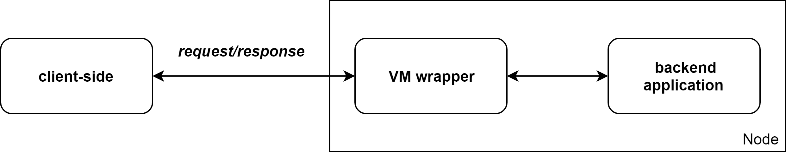

Introduction
This book describes the Fluence backend SDK and its possible usages for development of backend application for the Fluence network.
The Fluence network is designed to run Webassembly (Wasm) program in decentralized trustless environments. Generally it can be considered as several logical parts: a client-side (a frontend part used for sending requests to Wasm program), the VM wrapper (an intermediate layer that receives queries from client side and routes it to a Wasm program) and a backend app written on Wasm:

But an arbitrary Wasm code can't be run on Fluence - for example, it can use some imports of host-based functions that environment isn't provided for security reasons. And also each Wasm program has to follow some conventions to be able to interact with VM wrapper. These are described in details in Backend application conventions section of this book.
Quick start
This part goes through the basics of application creation for the Fluence Network using simple Rust application as an example.
Prerequisites
First of all, you need to install Rust with Webassembly target. Currently, our SDK requires a nightly version of Rust since it uses some features that presently experimental (e.g. allocator api). To install Rust, you can use the following commands:
# installs Rust compiler and other tools to `~/.cargo/bin`
$ curl https://sh.rustup.rs -sSf | sh -s -- -y --default-toolchain nightly-2019-01-08
# updates `PATH` environment variable
$ source $HOME/.cargo/env
# installs target for Webassembly
$ rustup target add wasm32-unknown-unknown --toolchain nightly-2019-01-08
To check that everything is set up correctly you can use this simple command:
$ echo "fn main(){1;}" > test.rs; rustc --target=wasm32-unknown-unknown test.rs
$ ls -la test.wasm
-rwxr-xr-x 1 user user 1.9M Feb 7 02:09 test.wasm*
It creates file with Rust code and then complies it to Webassembly. If it ends without errors and there is a test.wasm file in the same folder, set up is correct.
Quick start
At first lets create a new empty Rust lib package f.e. by the following command:
$ cargo new hello-user --lib --edition 2018
Created library `hello-user` package
$ cd hello-user
These commands create a stub for our project (more detailed info about package creating can be found here) and change current directory to it.
Let's show how to write a simple application by an example of a Rust program that receives a user name and returns "Hello from Fluence to user name".
We'll write out code in src/lib.rs:
use fluence::sdk::*;
#[invocation_handler]
fn main(name: String) -> String {
format!("Hello from Fluence to {}", name)
}
And that's it! Pretty simple, isn't it?
Yeah, now we have a simple program that can be run on Fluence, lets compile it!
Compilation and test launch
fluence crate has to be specified in dependencies in Cargo.toml to compile this example. A minimal example Cargo.toml could look like this:
[package]
name = "hello_user"
version = "0.1.1"
edition = "2018"
[lib]
name = "hello_user"
path = "src/lib.rs"
crate-type = ["cdylib"]
[dependencies]
fluence = { version = "0.0.11", features = ["export_allocator"] }
Currently, the last version of fluence_sdk is 0.0.11 but now it under construction and will change in future, stay tuned.
And finally to compile this example the following command could be used:
$ cargo +nightly-2019-01-08 build --target wasm32-unknown-unknown --release
Compiling proc-macro2 v0.4.27
...
Finished release [optimized] target(s) in 21.97s
The worked example of hello-user program can be found here.
App conventions
App lifecycle
The Fluence network backend infrastructure is based on Scala and Rust. As it already be noted each node in the network has a VM wrapper written on Scala that interacts with a backend App written on Wasm and published to the network by developers. To be able to run supplied Wasm code Asmble is used. It compiles Wasm to a JVM class that then loaded by VM wrapper. All other interactions between App and VM wrapper occurs in VM wrapper process address space without any inter-process communications.
Fluence backend App conventions
There are several restriction and conventions that each supplied Wasm code has to be met:
-
Wasm program can consist of several Wasm modules with different names, but only one of them (let's call it
mainand all other assidemodulesaccording to emcscripten) can be called fromuser-side. Thismainmodule MUST don't have the module name section. This requirement is based on the fact that according to the Wasm specification module name is optional, and there is no a possibility to add it to a generated Wasm binary by defaultrustcompiler. -
Each
mainmodule MUST have three export (in terms of the Wasm specification) functions with namesinvoke,allocateanddeallocate. -
invokefunction is used as themainmodule handler function. It means that all client-side requests are routed to it. The exactly signature of this function MUST be(func (export "invoke") (param $buffer i32) (param $size i32) (result i32))in wast representation. It receives two i32 params that represent a pointer to supplied argument and its size. Ifclient-sidesend an empty byte bufferinvokeSHOULD be called with two nulls (it means that according to Fluence protocol implementation the honest node calledinvokewith nulls but malicious node can do anything). This function has to return a pointer to result that MUST have the next structure in memory:| size (4 bytes; little endian) | result buffer (size bytes) |. This convention is based on the fact that Wasm function can return only one value of i32, i64, f32, f64, i128 but there both pointer and size should be returned. -
allocatefunction MUST have the next signature(func (export "allocate") (param $size i32) (result i32))in wast representation. It MUST return a pointer as i32 to a module memory region long enough to holdsizebytes. -
deallocatefunction MUST have the next signature(func (export "deallocate") (param $address i32) (param $size i32) (return)). It is called byVM wrapperwith a pointer to a memory region previously allocated throughallocatefunction and its size. This function SHOULD free this memory region.
App invoking scheme
A main module is usually invoked by the following scheme:
-
A
client-sidesend a request to Wasm code as a byte array. -
VM wrappercallallocatefunction ofmasterWasm module with a size of the array. -
VM wrapperwrites the array to the module memory. -
VM wrappercallinvokefunction frommastermodule with the address returned fromallocatefunction and the array size. -
VM wrappersynchronously waits ofinvokeresult. After receiving apointerfrom it, reads 4 bytes(that representssizeof a byte array) and then readssizebytes frompointer + 4offset (result). -
Resultas a byte array is sent to aclient-side.
Fluence SDK overview
Fluence SDK consists of two crates: main and macro. The first one is used for all memory relative operations and logging (please see App debugging section for more information). The second one contains a procedural macro to simplifying the entry function signature. These crates can be used separately of each other but the more preferred way is using of global fluence crate that reexport all other. In edition 2018 rust it can be done by add use fluence::sdk::* to the source.
App without SDK
First of all lets review how a simple hello-world app can be written without Fluence SDK on Rust. From backend app conventions it follows that the app must has a main module with three export functions. According to restriction to their signature so a basic structure of main module can look like that:
#[no_mangle]
pub unsafe fn invoke(ptr: *mut u8, len: usize) -> usize {
...
}
#[no_mangle]
pub unsafe fn allocate(size: usize) -> NonNull<u8> {
...
}
#[no_mangle]
pub unsafe fn deallocate(ptr: *mut u8, size: usize) {
...
}
They can be implemented like this one:
#[no_mangle]
pub unsafe fn invoke(_ptr: *mut u8, _len: usize) -> usize {
let result = "Hello, world!";
let result_len = result.len();
let total_len = result_len
.checked_add(RESULT_SIZE_BYTES)
.ok_or_else(|| MemError::new("usize overflow occurred"))?;
// converts array size to bytes in little-endian
let len_as_bytes: [u8; RESULT_SIZE_BYTES] = mem::transmute((result_len as u32).to_le());
// allocates a new memory region for the result
let result_ptr = alloc(NonZeroUsize::new_unchecked(total_len))?;
// copies length of array to memory
ptr::copy_nonoverlapping(
len_as_bytes.as_ptr(),
result_ptr.as_ptr(),
RESULT_SIZE_BYTES,
);
// copies array to memory
ptr::copy_nonoverlapping(
result.as_ptr(),
result_ptr.as_ptr().add(RESULT_SIZE_BYTES),
result_len,
);
result_ptr as usize
}
#[no_mangle]
pub unsafe fn allocate(size: usize) -> NonNull<u8> {
let non_zero_size = NonZeroUsize::new(size)
.unwrap_or_else(|| panic!("[Error] Allocation of zero bytes is not allowed."));
let layout: Layout = Layout::from_size_align(non_zero_size.get(), mem::align_of::<u8>())?;
Global.alloc(layout)
.unwrap_or_else(|_| panic!("[Error] Allocation of {} bytes failed.", size))
}
#[no_mangle]
pub unsafe fn deallocate(ptr: NonNull<u8>, size: usize) {
let non_zero_size = NonZeroUsize::new(size)
.unwrap_or_else(|| panic!("[Error] Deallocation of zero bytes is not allowed."));
let layout = Layout::from_size_align(non_zero_size.get(), mem::align_of::<u8>())?;
Global.dealloc(ptr, layout);
}
Fluence SDK usage
From the example above it can be seen that allocate and deallocate functions have only a utility purpose and normally used only by VM wrapper. These functions aren't any that most of developers want to realize in their app. Fluence SDK provides fluence::memory::alloc and fluence::memory::dealloc functions also based on GlobalAlloc. They can be used by specifying the export_allocator feature of SDK.
The invoke function can be also simplified by using the Fluence SDK that provides fluence::memory::write_result_to_mem and fluence::memory::read_input_from_mem_:
#[no_mangle]
pub unsafe fn invoke(_ptr: *mut u8, _len: usize) -> usize {
let test_str = "Hello, world!";
fluence::memory::write_result_to_mem(test_str)
.unwrap_or_else(|_| {
panic!("[Error] Putting the result string into a raw memory was failed")
})
.as_ptr() as usize
}
Invocation handler to the rescue
The example above can be simplified a little bit more using procedural macros invocation_handler as hello-world example mentioned in quick start example:
use fluence::sdk::*;
#[invocation_handler]
fn greeting(name: String) -> String {
format!("Hello, world! From user {}", name)
}
Internally this macros creates a new function invoke that converts a raw argument to appropriate format, calls f and then converts its result via memory::write_result_to_mem from fluence_sdk_main. So to use this crate apart from fluence fluence_sdk_main has to be imported:
use fluence::sdk::*;
fn greeting(name: String) -> String {
format!("Hello, world! From user {}", name)
}
#[no_mangle]
pub unsafe fn invoke(ptr: *mut u8, len: usize) -> std::ptr::NonNull<u8> {
let arg = memory::read_input_from_mem(ptr, len);
let arg = String::from_utf8(arg).unwrap();
let result = greeting(arg);
memory::write_result_to_mem(result.as_bytes()).expect("Putting result string to memory has failed")
}
To use this macro with some function f some conditions have to be met:
-
fmustn't have more than one input argument. -
fmustn't beunsafe,const, generic, have custom abi linkage or variadic param. -
The type of
finput (if it present) and output parameters have to be one of {String, Vec} set. -
fmustn't have the nameinvoke.
For troubleshooting and macros debugging cargo expand can be used.
The macro also has an init_fn attribute that can be used for specifying initialization function name. This function will be called only in the first invoke function call. It can be used like this:
use fluence::sdk::*;
fn init() {
...
}
#[invocation_handler(init_fn = init)]
fn greeting(name: String) -> String {
format!("Hello from Fluence to {}", name)
}
This is expanded to
use fluence::sdk::*;
fn init() {
...
}
fn greeting(name: String) -> String {
format!("Hello from Fluence to {}", name)
}
static mut IS_INITED: bool = false;
#[no_mangle]
pub unsafe fn invoke(ptr: *mut u8, len: usize) -> std::ptr::NonNull<u8> {
if !IS_INITED {
init();
unsafe { IS_INITED = true; }
}
let arg = memory::read_input_from_mem(ptr, len);
let arg = String::from_utf8(arg).unwrap();
let result = greeting(arg);
memory::write_result_to_mem(result.as_bytes()).expect("Putting result string to memory has failed")
}
This example can be found here.
Rust edition 2015
To use Fluence SDK with rust edition 2015 please import it like this:
#![feature(custom_attribute)]
extern crate fluence;
use fluence::sdk::*;
Example of hello-world2 app on rust edition 2015 can be found here.
Fluence app debugging
Wasm logger usage
There is a few debugging capabilities for Wasm program. The Fluence network provides a possibility to so-called print-debugging. It can be included by specifying wasm_logger feature of the sdk.
The logger is implemented as a logging facade for crate [log]. It means that all log crate can be used as usual. Let's review it by example of hello-world2 application with simple logging:
use fluence::sdk::*;
use log::info;
fn init() {
logger::WasmLogger::init_with_level(log::Level::Info).is_ok()
}
#[invocation_handler(init_fn = init)]
fn main(name: String) -> String {
info!("{} has been successfully greeted", name);
format!("Hello from Fluence to {}", name)
}
Generally it is better to initialize logger in the init function. And also note that logger designed only for Wasm environment and Fluence WasmVm. Don't use it for other targets and virtual machines. But if is is needed to create a project with logger either for Wasm target or other architectures conditional compilation can be used:
fn init() {
if cfg!(target_arch = "wasm32") {
logger::WasmLogger::init_with_level(log::Level::Info).unwrap();
} else {
simple_logger::init_with_level(log::Level::Info).unwrap();
}
}
It is important to note that by default debugging capabilities is disabled on the Fluence network because of verification game process (you can find more information about it in our paper).
Usage of Scala runner
Sometimes it needs not only debug output but a possibility to run resulted Wasm app with some different inputs. It can be done by using so-called runner written on Scala (because it uses a WasmVm implementation that written on Scala).
An example of runner for hello-world2 can be found here. It can be used a template for other runner realizations. These runners also support logging unless loggerRegister key in settings equals to 0 (for hello-world2 app settings can be found here).
Examples
Llamadb
Llamadb app is an example of adopting existing project in-memory SQL database to the Fluence network. This app is based on the original llamadb database. Since it is in-memory database and doesn't has multithreading, disk storage or other OS features it can be easily ported to the Fluence. All that
Tic-tac-toe
Best practices
Module memory consumption
Please pay attention to module memory usage - each app can have maximum 4Gb of heap. But in many situations app can have public API that explicitly or indirectly consume module memory (e.g. by saving some user data). So users can make a DoS attack to such app. Usually proper work with memory can be reach by using fix-size collection like ArrayDeque. In future Fluence SDK will provide some other collections for that.
One example of proper work with memory can be found in tic-tac-toe example app.
Reduce size of app
There are some techniques that can reduce size of generated app. Most of them can be found in this nice chapter of Rust and WebAssembly book. But as for the Fluence network to reduce the size of binary as much is possible no_std crate without SDK can be used. The example of hello-world implemented without the sdk can be found in Fluence SDK overview.
Other
-
don't use panic! and methods that lead to it (expect, unwrap) in your code.
-
avoid using unsafe operations except these that already in Fluence SDK.